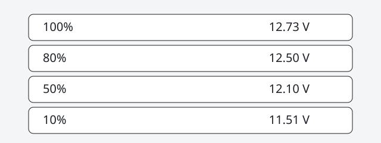

Check a 12V Battery Open-Circuit Voltage
Built by Jeremy Panasuk. Published October 6, 2026.
Trojan's open-circuit table is a state-of-charge check for flooded and VRLA lead-acid batteries after they have sat idle. It is not a measurement of remaining amp-hours.
Open-circuit voltage test
Trojan's battery maintenance page says both open-circuit voltage and specific gravity can indicate charge level, age, and health. For an accurate voltage reading, batteries must remain idle (no charging, no discharging) for at least 6 hours, preferably 24 hours. The numbered steps on that page are:
- Disconnect all loads from the batteries.
- Measure the voltage using a DC voltmeter.
- Check the state of charge with Table 1 below.
- Charge the battery if it registers 0% to 70% charged.
If the battery registers below the Table 1 values, Trojan says the battery may have been left discharged too long, or it may have a bad cell. Batteries in those conditions should be taken to a specialist for further evaluation or retired from service.
Trojan's warning on terminals: do not overtighten terminals. Doing so can result in post breakage, post meltdown, or fire. Always wear protective clothing, gloves, and goggles when handling batteries, electrolyte, and charging your battery.
Table 1, 12 V column
These are the percentage-of-charge, specific-gravity, and 12 V open-circuit columns from Trojan's table. The specific-gravity test on the same page says to correct hydrometer readings to 80°F (26.6°C): add 0.004 for every 10°F (5.6°C) above 80°F, and subtract 0.004 for every 10°F below 80°F. Factory specification is 1.277 ± 0.007. The specific-gravity steps are for flooded batteries only.
| Percentage of charge | Specific gravity | 12 V open-circuit voltage |
|---|---|---|
| 100% | 1.277 | 12.73 |
| 90% | 1.258 | 12.62 |
| 80% | 1.238 | 12.50 |
| 70% | 1.217 | 12.37 |
| 60% | 1.195 | 12.27 |
| 50% | 1.172 | 12.10 |
| 40% | 1.148 | 11.89 |
| 30% | 1.124 | 11.81 |
| 20% | 1.098 | 11.66 |
| 10% | 1.073 | 11.51 |

The same Trojan table also lists 6 V, 8 V, 24 V, 36 V, and 48 V open-circuit columns. This page copies the 12 V column because that is the check the heading is about. Flooded batteries also need the watering procedure on Trojan's page: add water, never acid, and do not overwater. If any specific-gravity reading stays below 1.277 ± 0.007 after a complete charge and an equalization charge, Trojan says one of several conditions may exist, including an old battery or a weak cell, and batteries in those conditions should go to a specialist or be retired.
What this does not tell the calculator
panelsForBattery in assets/app.js sets stored watt-hours to amp-hours × volts, then array watts to that product ÷ sun hours ÷ 0.85. A 100 Ah label at 12 V is 1,200 Wh on that line. At the form's 4.5 sun-hour default, 1,200 ÷ 4.5 ÷ 0.85 = 313.7 W, which the screen rounds to 314 W. With the 300 W panel option, that rounds up to 2 panels. None of those steps reads a voltmeter.
sizeSystem sets bank watt-hours to daily watt-hours × days of autonomy ÷ the depth of discharge selected in the form. On a 2,400 Wh day, one day at the form's 80% selection is 2,400 × 1 ÷ 0.8 = 3,000 Wh, then 3,000 ÷ 12 = 250 Ah. That 80% is the form's input. Trojan's 12.50 V row is also labeled 80%, and the two are not the same fact. Multiplying 0.80 × a stated 100 Ah nameplate is 80 Ah of arithmetic on the label. It is not a measured capacity, and it is not what 12.50 V proved.
The battery count that uses this 2,400 Wh day, including two days at 80% (6,000 Wh, 500 Ah at 12 V), is on how many solar batteries do I need. Chemistry differences, including why a lithium charge profile is not this lead-acid table, are on AGM vs lithium.
As an Amazon Associate I earn from qualifying purchases. The Amazon links below are affiliate links; they don't change the math.
Affiliate disclosure: as an Amazon Associate, we earn from qualifying purchases — at no cost to you.
One common mistake
Measuring the battery while a charger or a load is still connected, then treating that voltage as Table 1. Trojan requires idle time: at least 6 hours, preferably 24, with no charging and no discharging. The other mistake is reading 12.50 V and typing 80% of nameplate amp-hours into a design as if the battery had been capacity-tested.
Limits
This table is Trojan's guideline for deep-cycle flooded and VRLA batteries. Do not apply the 12.73 V to 11.51 V column to a lithium iron phosphate battery. Do not overtighten terminals. Acid, watering, and equalization belong to the procedure on Trojan's page; this summary does not replace it. If a cell stays low after charge and equalization, Trojan's instruction is a specialist or retirement, not another voltage guess. The calculator's amp-hour result is still a sizing input. It does not certify the battery on the bench.
FAQ
Does 12.50 V mean the battery still has 80% of its nameplate amp-hours?
No. Trojan's table maps 12.50 V to 80% state of charge on a rested open-circuit reading. It does not measure remaining amp-hours. Multiplying 0.80 by a 100 Ah nameplate is 80 Ah of arithmetic on that label. It is not a capacity test.
Can this table be used on a LiFePO4 battery?
No. Trojan's maintenance page is for deep-cycle flooded and VRLA lead-acid batteries. The 12.73 V to 11.51 V column is that table's 12 V open-circuit voltages. Do not read a lithium iron phosphate battery against it.
Compiled with AI assistance from the sources below. Spot an error? Email jpanasuk@gmail.com.
Sources
- Trojan Battery, Battery Maintenance — open-circuit test steps, the idle requirement, Table 1 (specific gravity and 12 V open-circuit voltage), factory specific gravity 1.277 ± 0.007, and the terminal warning. Accessed Oct 6, 2026.
- SolarSizer calculator, assets/app.js —
panelsForBattery(amp-hours × volts ÷ sun hours ÷ 0.85) andsizeSystem(daily watt-hours × days ÷ depth of discharge). Accessed Oct 6, 2026.